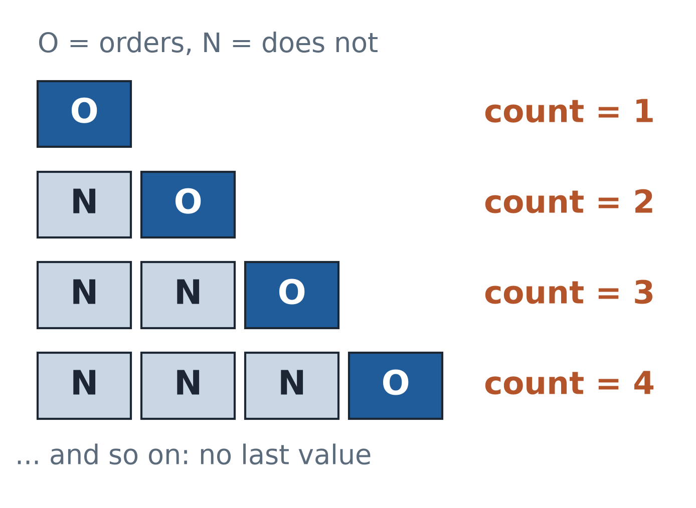
Counting events and measuring time
Lecture 4 · Probability Theory and Mathematical Statistics
2026-11-25
Marat’s walk-in Saturday
\[ \newcommand{\E}{\mathbb{E}} \newcommand{\Var}{\operatorname{Var}} \newcommand{\Cov}{\operatorname{Cov}} \newcommand{\Corr}{\operatorname{Corr}} \newcommand{\Prob}{\mathbb{P}} \newcommand{\R}{\mathbb{R}} \]
Marat’s optician’s shop in Kazan again. This Saturday nobody has booked a free eye test.
Walk-ins come one at a time. Each orders glasses with probability 0.4, independently. No coffee for Marat until the first pair is sold.
He counts the customers he tests up to and including the first one who orders.
Is the first order most likely from customer 1, 2 or 3? How many should he expect to test?
Marat’s first order: one path for each value Ex 4.1
Given: walk-ins one after another; each orders (O) with 0.4, does not (N) with 0.6; independent
\(X\) = customers tested up to and including the first order. Number of trials fixed? No: Marat keeps testing until someone orders. So \(X\) is not binomial.
Each value of \(X\) comes from exactly one path: some N’s, then one O. The customers are independent (Def 2.3), so multiply along the path.
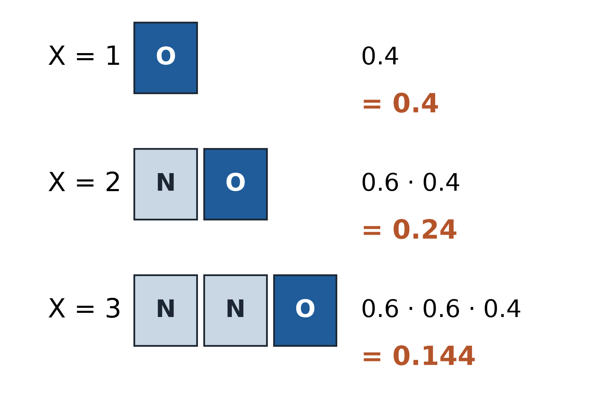
Marat’s first order: more than 3 customers Ex 4.1
Given: each walk-in orders with 0.4, does not with 0.6, independently; \(\Prob(X=1)=0.4\), \(\Prob(X=2)=0.24\), \(\Prob(X=3)=0.144\)
\(X>3\) means the first three customers all say no: NNN, whatever comes after.
\[\Prob(X>3)=0.6^3=0.216\]
The four pieces cover everything: \(0.4+0.24+0.144+0.216=1\).
The first order is most likely to come from customer 1. Each later step multiplies by 0.6.
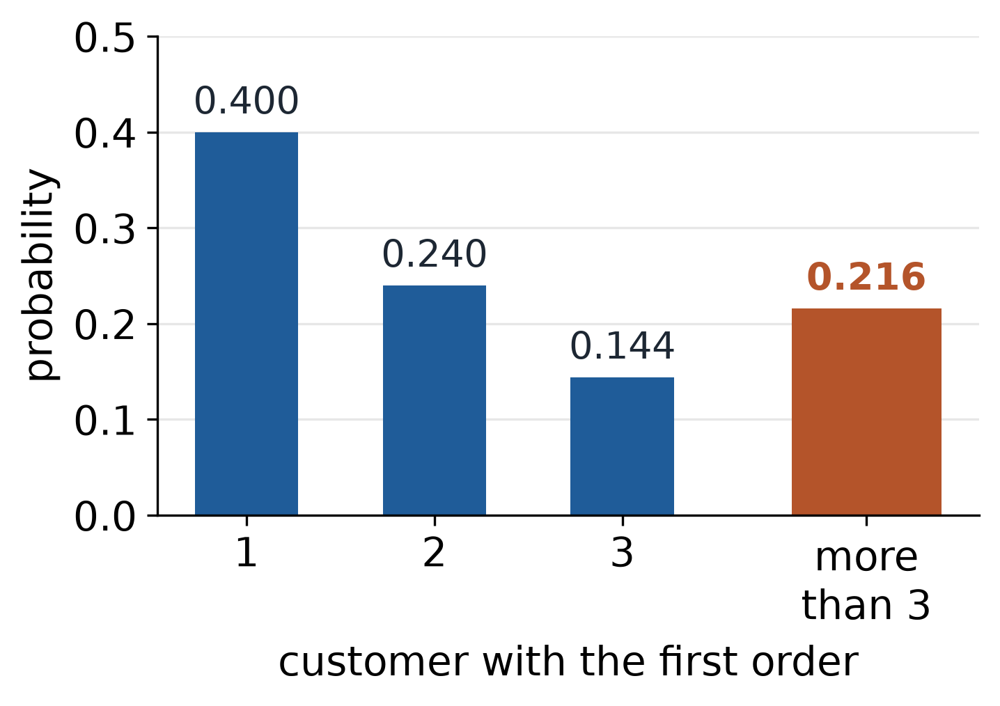
Counting trials, not successes Ex 4.1
Given: Lecture 3: \(Y\) = orders among 3 booked customers, \(Y\sim\operatorname{Bin}(3,\,0.4)\), \(\Prob(Y=0)=0.216\), \(\Prob(Y=1)=0.432\), \(\Prob(Y=2)=0.288\), \(\Prob(Y=3)=0.064\). Today: \(X\) = customers up to the first order
| Lecture 3: \(Y\) | Today: \(X\) | |
|---|---|---|
| number of trials | fixed: 3 customers | random: 1, 2, 3, … |
| number of successes | random: 0, 1, 2 or 3 | fixed: 1, the first order |
| distribution | binomial | geometric (next slide) |
One link between them: \(X>3\) and \(Y=0\) are the same story, three noes in a row. \[\Prob(X>3)=\Prob(Y=0)=0.6^3=0.216\]
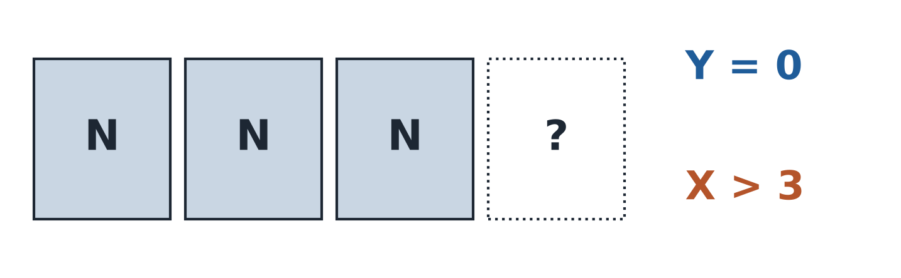
Geometric distribution Def 4.1, Eq 4.1, Fig 4.1
Independent trials, each a success with the same probability \(p\) (\(0<p\le1\)). \(X\) = the number of the trial with the first success has the geometric distribution, \(X\sim\operatorname{Geom}(p)\): \[\Prob(X=k)=(1-p)^{k-1}\,p,\qquad k=1,2,3,\dots\]
Marat: \(p=0.4\), so \(X\sim\operatorname{Geom}(0.4)\).
Each bar is 0.6 times the one before. The bars go on for ever, too small to see.
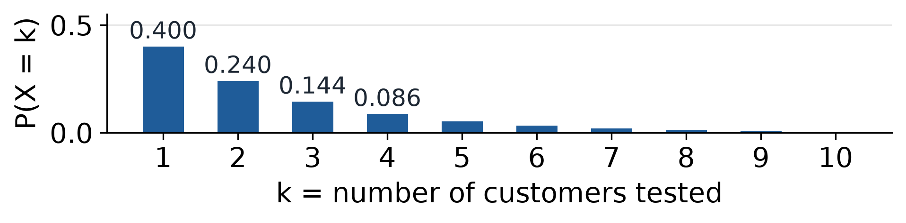
How to read \(X\sim\operatorname{Geom}(p)\) and \(k=1,2,3,\dots\) Sec 4.1
| Write | Say | For Marat |
|---|---|---|
| \(X\sim\operatorname{Geom}(p)\) | “X has the geometric distribution with parameter p” | \(X\sim\operatorname{Geom}(0.4)\) |
| \(k=1,2,3,\dots\) | “k equals one, two, three, and so on” | the list has no last value: there is no largest possible \(X\) |
| \((1-p)^{k-1}\,p\) | “\(k-1\) failures, then a success” | \(k=3\): \((1-0.4)^{3-1}\cdot0.4=0.6^2\cdot0.4=0.144\) |
Could the first order come only from customer 20? In principle, yes: \[\Prob(X=20)=0.6^{19}\cdot0.4\approx0.00002\] Tiny, but not zero.
More than \(k\) trials, and the name Sec 4.1
\(X>k\) means the first \(k\) trials all fail: \[\Prob(X>k)=(1-p)^k\]
Marat, \(X\sim\operatorname{Geom}(0.4)\): \(\Prob(X>3)=0.6^3=0.216\), the orange bars.
\(p,\ (1-p)p,\ (1-p)^2p,\dots\) is a geometric progression, hence the name. Not geometric probability (Def 1.9).
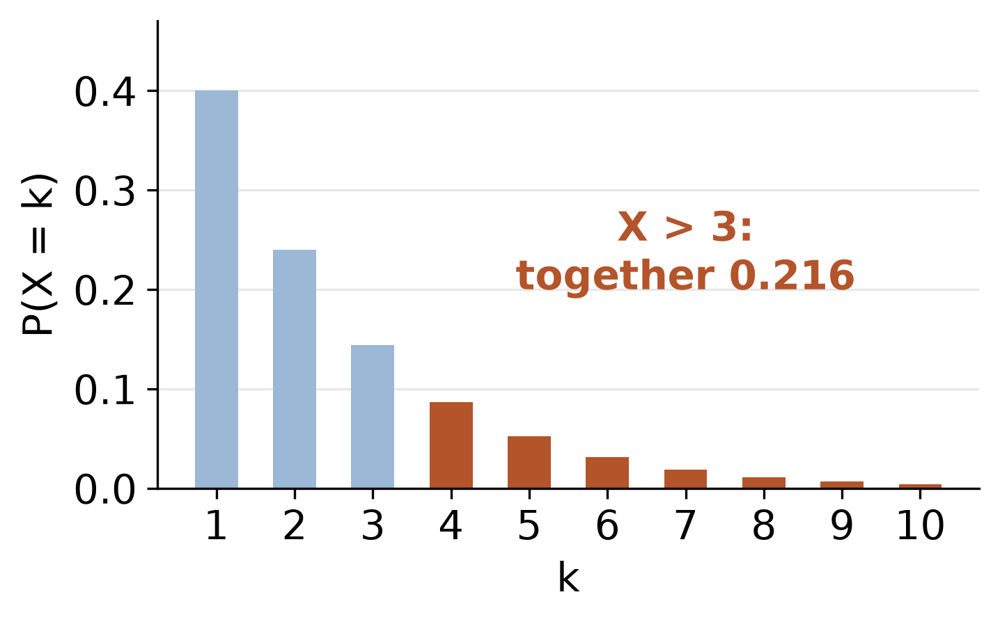
Some books count the failures before the first success, from 0. We count trials, from 1.
Mean and variance of the geometric Thm 4.1
If \(X\sim\operatorname{Geom}(p)\), then \(\quad\E[X]=\dfrac1p,\qquad \Var(X)=\dfrac{1-p}{p^2}.\)
Idea: write \(m=\E[X]\); look at the first trial only.
\[ \begin{aligned} m&=p\cdot1+(1-p)(1+m)\\ &=1+(1-p)\,m \end{aligned} \] Subtract \((1-p)m\): \(p\,m=1\), \(m=1/p\).
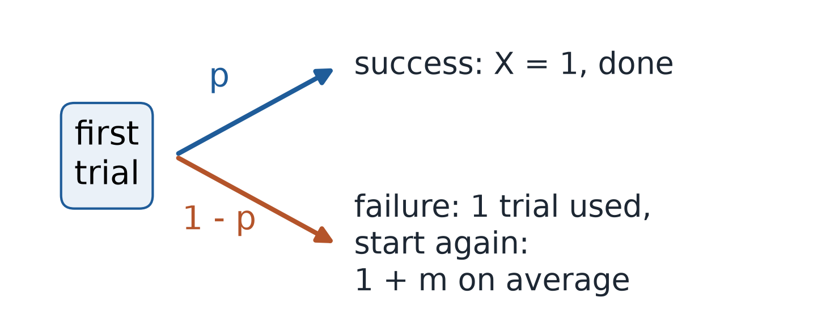
Variance: similar; see Section 4.1.
What 2.5 customers means Thm 4.1
Given: \(X\sim\operatorname{Geom}(0.4)\), the customers Marat tests up to and including the first order
\[ \begin{aligned} \E[X]&=\frac1{0.4}=2.5\\ \Var(X)&=\frac{0.6}{0.4^2}=3.75\\ \operatorname{SD}(X)&=\sqrt{3.75}\approx1.94 \end{aligned} \]
Among 1,000 customers about 400 order: one order per \(1000/400=2.5\) customers.
Most likely 1, mean 2.5, SD almost as large. Some mornings the coffee comes late.
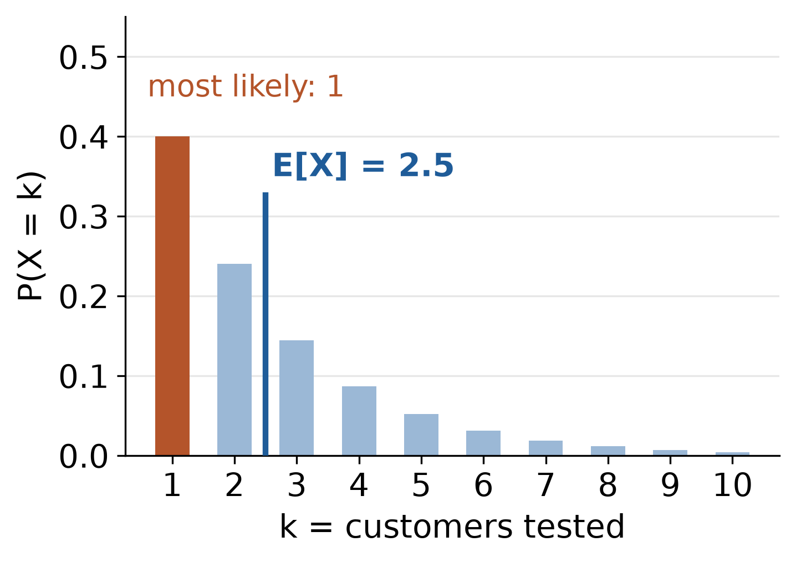
Your turn: phone sales in Novosibirsk Exercise 1
Tomas sells insurance by phone. Each call books a meeting with probability 0.2, independently of the other calls. \(X\) = the calls he makes up to and including the first booked meeting.
Find \(\Prob(X=3)\), \(\Prob(X>5)\) and \(\E[X]\).
\(X\sim\operatorname{Geom}(0.2)\), so each call fails with \(1-0.2=0.8\).
\(\Prob(X=3)=0.8^2\cdot0.2=\) 0.128
\(\Prob(X>5)=0.8^5\approx\) 0.328 (five failures in a row)
\(\E[X]=1/0.2=\) 5 calls
Drawing without putting back Sec 4.2
Given: L02’s box: 12 LED bulbs, 3 of them faulty; Oksana takes 2 without putting the first back
\(X\) = faulty bulbs among the 2. Trials fixed? Yes, 2. Same probability each draw? No: the second is \(2/11\) or \(3/11\). So not binomial.
Count (Lecture 1): \(\binom{12}{2}=66\) equal pairs; one faulty = one of the 3 and one of the 9 good: \[\Prob(X=1)=\frac{\binom31\binom91}{\binom{12}2}=\frac{27}{66}\approx0.409\]
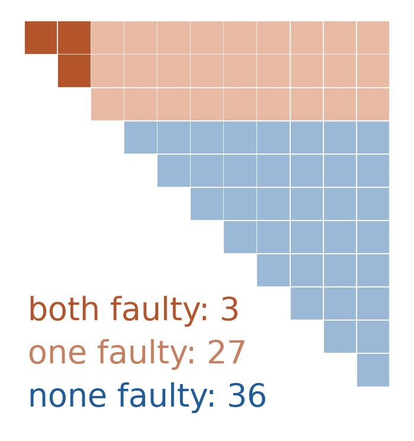
Same way: \(\Prob(X=0)=\binom92/66=36/66\), \(\Prob(X=2)=\binom32/66=3/66\).
Hypergeometric distribution Def 4.2
A box has \(N\) items, \(M\) of them special. Take \(n\) without putting back, all sets of \(n\) equally likely. \(X\) = special items taken has the hypergeometric distribution: \[\Prob(X=k)=\frac{\binom{M}{k}\binom{N-M}{n-k}}{\binom{N}{n}},\qquad \E[X]=n\,\frac{M}{N}.\]
Bulbs: \(N=12\) in the box, \(M=3\) faulty, \(n=2\) taken. So \(\E[X]=2\cdot\frac{3}{12}=\) 0.5 faulty bulbs.
Each bulb taken is faulty with probability \(M/N\), and expected values add (Lecture 6).
Our rule: sample under about 5% of the box? Then \(\operatorname{Bin}(n,\,M/N)\) is a fine approximation.
Dina’s parcel pickup point
Dina runs a parcel pickup point in Perm; it shares a ground-floor room with a key-cutting stall. On weekday afternoons it gets on average 3 customers per 10 minutes, one at a time, and they don’t coordinate.
How many will come in the next 10 minutes? There is no list of \(n\) people who might come, so the binomial doesn’t fit, and there is no upper limit.
What we know is the average rate.
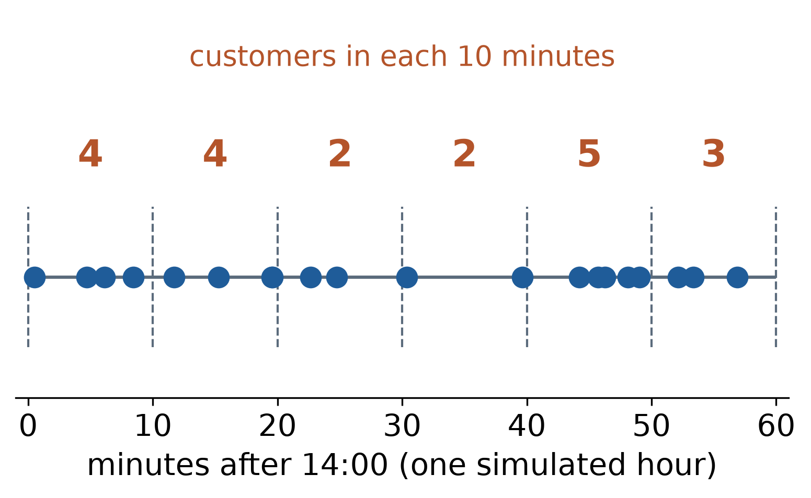
How to read \(\lambda\), \(\operatorname{Pois}(\lambda)\) and \(e^{-3}\) Sec 4.3
| Write | Say | For Dina |
|---|---|---|
| \(\lambda\) | “lambda” (LAM-da), a Greek letter | the average number of events in the interval: \(\lambda=3\) customers per 10 minutes |
| \(X\sim\operatorname{Pois}(3)\) | “X has the Poisson distribution with parameter 3” | \(X\) = customers in the next 10 minutes |
| \(e\) | “e”, a fixed number like \(\pi\) | \(e\approx2.718\) |
| \(e^{-3}\) | “e to the minus three” | \(e^{-3}=1/e^3=1/20.09\approx0.0498\) |
On a calculator: the \(e^x\) key (often Shift + ln), then enter \(-3\). Try it now: you should see 0.0498.
How to read \(k!\) and the Poisson formula Sec 4.3
\(k!\) reads “k factorial” (Lecture 1): multiply the whole numbers from \(k\) down to 1.
| \(k\) | \(k!\) |
|---|---|
| 0 | \(1\) (by agreement) |
| 1 | \(1\) |
| 2 | \(2\cdot1=2\) |
| 3 | \(3\cdot2\cdot1=6\) |
| 4 | \(4\cdot3\cdot2\cdot1=24\) |
Both together, one instance: \[e^{-3}\cdot\frac{3^2}{2!}=0.0498\cdot\frac{9}{2}\approx0.224\]
Read it from the right: \(3^2\) is “three squared” \(=9\), divided by \(2!=2\), times \(e^{-3}\approx0.0498\).
This is exactly the shape of the formula on the next slide, with \(\lambda=3\) and \(k=2\).
Poisson distribution Def 4.3, Eq 4.2
\(X\) has the Poisson distribution with parameter \(\lambda>0\), written \(X\sim\operatorname{Pois}(\lambda)\), if \[\Prob(X=k)=e^{-\lambda}\,\frac{\lambda^k}{k!},\qquad k=0,1,2,\dots\]
The usual model for the number of events in a fixed interval of time. Then \(\lambda\) is the average number of events in that interval.
Values start at 0: nobody may come.
| The events happen … | Dina’s customers |
|---|---|
| one at a time | yes, one at a time |
| independently of each other | yes, they don’t coordinate |
| at a constant average rate | yes, 3 per 10 minutes |
Customers at Dina’s point: 0 to 3 Ex 4.2
Given: on average 3 customers per 10 minutes; one at a time, independent, steady rate
\(X\) = customers in the next 10 minutes. Number of trials fixed? No, and no upper limit. Steady average rate? Yes, 3 per 10 minutes.
So \(X\sim\operatorname{Pois}(3)\).
Put \(\lambda=3\) into Eq 4.2, with \(e^{-3}\approx0.0498\).
| \(k\) | \(e^{-3}\cdot3^k/k!\) | \(\Prob(X=k)\) |
|---|---|---|
| 0 | \(e^{-3}\cdot 1/1\) | \(\approx0.050\) |
| 1 | \(e^{-3}\cdot 3/1\) | \(\approx0.149\) |
| 2 | \(e^{-3}\cdot 9/2\) | \(\approx0.224\) |
| 3 | \(e^{-3}\cdot 27/6\) | \(\approx0.224\) |
2 and 3 customers are equally likely.
Customers at Dina’s point: at least 4 Ex 4.2, Fig 4.2
Given: \(X\sim\operatorname{Pois}(3)\); \(\Prob(X=0)\approx0.050\), \(\Prob(X=1)\approx0.149\), \(\Prob(X=2)\approx0.224\), \(\Prob(X=3)\approx0.224\)
“At least 4” has no last value: 4, 5, 6, … So use the complement rule (Thm 1.2).
\[ \begin{aligned} \Prob(X\le3)&\approx0.050+0.149\\ &\quad+0.224+0.224=0.647\\ \Prob(X\ge4)&=1-\Prob(X\le3)\approx0.353 \end{aligned} \]
About one 10-minute stretch in three brings 4 or more customers.
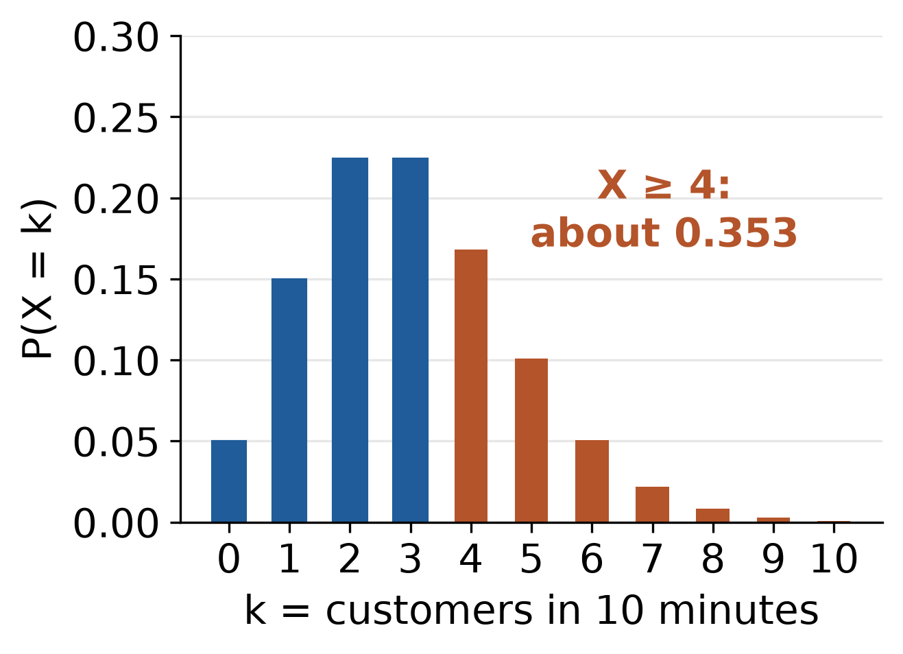
Pitfall: \(\lambda\) belongs to the interval Sec 4.3
Given: Dina’s point gets on average 3 customers per 10 minutes
Wrong. Customers in the next 20 minutes: \(\operatorname{Pois}(3)\).
Right. 3 per 10 minutes is 6 per 20 minutes, so the count for 20 minutes is \(\operatorname{Pois}(6)\).
Nobody in 20 minutes: \(\Prob(X=0)=e^{-6}\approx\) 0.0025.
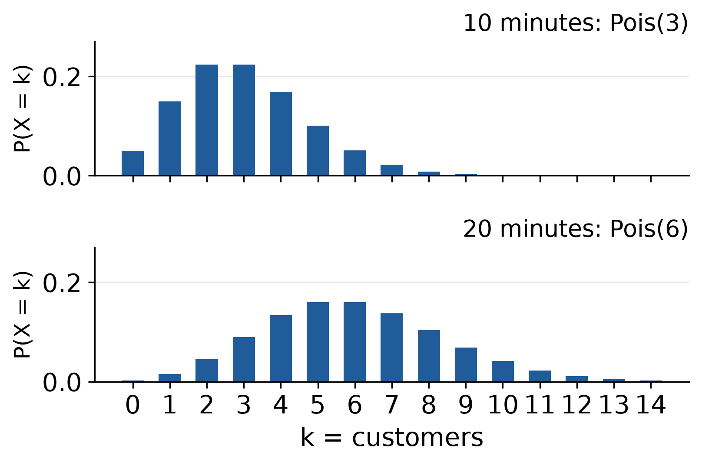
Your turn: bikes on the Sochi seafront Exercise 2
A bike-rental point gets on average 4 rentals per hour, one at a time and independently. \(X\) = rentals in the next 30 minutes.
Name the distribution of \(X\) with its parameter. Find \(\Prob(X=0)\) and \(\Prob(X\ge2)\).
4 per hour is 2 per 30 minutes, so \(X\sim\) \(\operatorname{Pois}(2)\).
\(\Prob(X=0)=e^{-2}\approx\) 0.135
\(\Prob(X\ge2)=1-\Prob(X=0)-\Prob(X=1)=1-e^{-2}(1+2)=1-3e^{-2}\approx\) 0.594
Poisson approximation to the binomial Thm 4.2
Let \(X\sim\operatorname{Bin}(n,p)\). If \(n\) is large and \(p\) is small, then \[\Prob(X=k)\approx e^{-\lambda}\,\frac{\lambda^k}{k!}\quad\text{with }\lambda=np,\] for \(k=0,1,2,\dots\) Our rule of thumb: good when \(n\ge100\) and \(np\le10\).
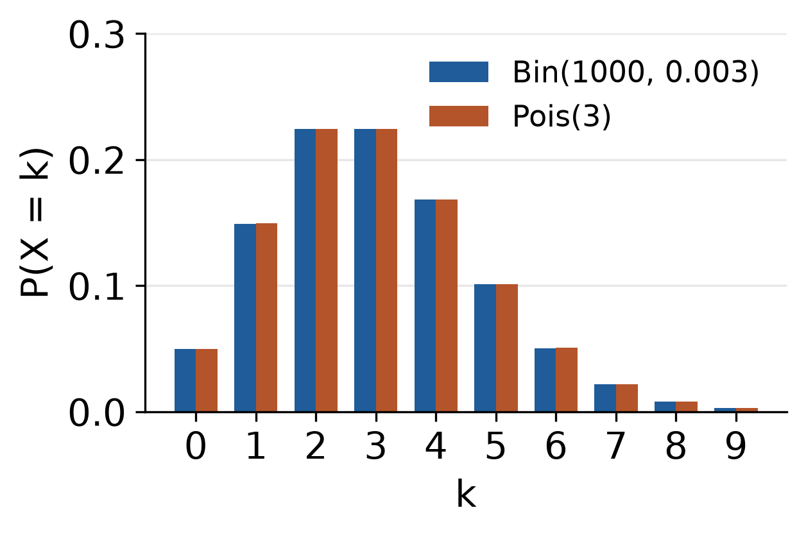
Idea: \(p=\lambda/n\), and \((1-\lambda/n)^n\) gets close to \(e^{-\lambda}\): \(0.997^{1000}\approx0.0496\), \(e^{-3}\approx0.0498\). Proof: the book, Sec 4.4.
Mean and variance of the Poisson Thm 4.3
If \(X\sim\operatorname{Pois}(\lambda)\), then \(\E[X]=\lambda\) and \(\Var(X)=\lambda\).
Idea: \(\operatorname{Pois}(\lambda)\) is what \(\operatorname{Bin}(n,\lambda/n)\) turns into for large \(n\). That binomial has mean \(n\cdot\frac{\lambda}{n}=\lambda\) and variance \(\lambda\big(1-\frac{\lambda}{n}\big)\), which gets closer and closer to \(\lambda\) (Thm 3.4).
Dina, \(X\sim\operatorname{Pois}(3)\): she expects 3 customers per 10 minutes, where we started, with \(\operatorname{SD}(X)=\sqrt3\approx1.73\).
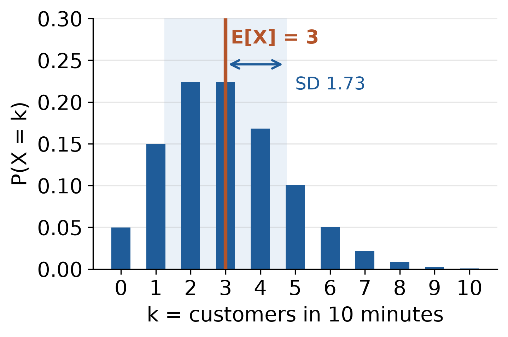
Returned parcels: is it Poisson? Ex 4.3
Given: Dina’s point hands out 500 parcels a day; each is returned to the seller with probability 0.004, independently
\(X\) = returned parcels in a day. Number of trials fixed? Yes, \(n=500\). So \(X\sim\operatorname{Bin}(500,\,0.004)\).
The binomial needs powers like \(0.996^{500}\). The Poisson needs only \(e^{-2}\approx0.1353\): \[\Prob(X=2)\approx e^{-2}\,\frac{2^2}{2!}=2e^{-2}\approx0.2707\]
| Rule | Returns | OK? |
|---|---|---|
| \(n\ge100\) | \(n=500\) | yes |
| \(np\le10\) | \(500\cdot0.004=2\) | yes |
So \(X\approx\operatorname{Pois}(2)\), with \(\lambda=np=2\).
Returned parcels: binomial against Poisson Ex 4.3
Given: \(X\sim\operatorname{Bin}(500,\,0.004)\), approximated by \(\operatorname{Pois}(2)\); the binomial row is exact
| \(k\) | 0 | 1 | 2 | 3 | 4 |
|---|---|---|---|---|---|
| \(\operatorname{Bin}(500,\,0.004)\) | 0.1348 | 0.2707 | 0.2712 | 0.1808 | 0.0902 |
| \(\operatorname{Pois}(2)\) | 0.1353 | 0.2707 | 0.2707 | 0.1804 | 0.0902 |
The two rows differ by less than 0.001 everywhere.
The probability of a day with no returns is about 0.135.
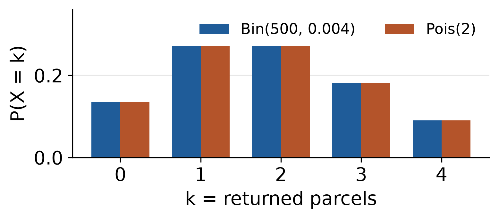
Which discrete distribution? Tbl 4.1
Find what \(X\) counts, then ask what is fixed in advance.
| Distribution | What \(X\) counts | Fixed | Values |
|---|---|---|---|
| Bernoulli(\(p\)) | success in one trial | \(p\) | \(0,1\) |
| \(\operatorname{Bin}(n,p)\) | successes in \(n\) trials | \(n\), \(p\) | \(0,\dots,n\) |
| \(\operatorname{Geom}(p)\) | trials up to and including the first success | \(p\) only | \(1,2,3,\dots\) |
| Hypergeometric | special items, no putting back | \(N\), \(M\), \(n\) | \(0,\dots,n\) |
| \(\operatorname{Pois}(\lambda)\) | events in an interval | rate \(\lambda\) | \(0,1,2,\dots\) |
Marat’s walk-ins: geometric. Oksana’s bulbs: hypergeometric. Dina’s customers: Poisson. Dina’s returns: binomial, close to Poisson.
Break
Back in 10 minutes.
Lena’s shuttle: one value has probability 0 Sec 4.5
Lena’s office shuttle leaves every 12 minutes (Seminar 1, Problem 12). Her waiting time can be any number from 0 to 12.
Each single value has probability 0, so a PMF would be 0 everywhere. Instead we give probabilities to intervals, as areas under a curve.
For that we need two tools from school, and only the parts we use: the derivative (a slope) and the integral (an area).
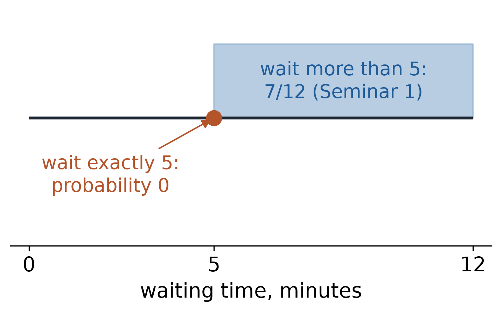
Derivative: a slope Sec 4.5, Fig 4.3
The derivative of a function \(F\) at a point \(x\), written \(F'(x)\), is the slope of the graph of \(F\) at \(x\).
How to read \(F'(x)\)
“F prime of x”: how many units \(F\) rises per one unit to the right, at the point \(x\).
For \(F(x)=x^2\) the derivative is \(F'(x)=2x\). At \(x=3\) the slope is \(F'(3)=2\cdot3=\) 6.
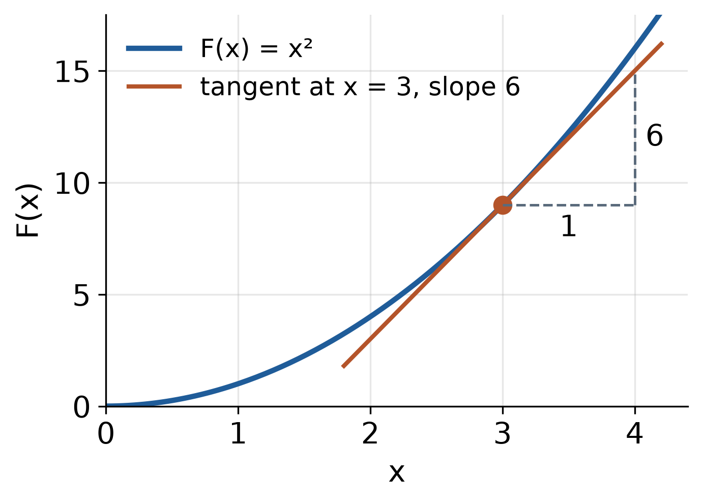
The derivative rules we need Sec 4.5
| Function (\(c\) a number, \(n\) a whole number) | Derivative | Example |
|---|---|---|
| a number \(c\) | \(0\) | \((5)'=0\): a flat line has slope 0 |
| \(x^n\) | \(n\,x^{n-1}\) | \((x)'=1\), \((x^2)'=2x\), \((x^3)'=3x^2\) |
| \(c\) times a function | \(c\) times its derivative | \((4x^3)'=4\cdot3x^2=12x^2\) |
| sum or difference | sum or difference of the derivatives | \((2x-x^2)'=2-2x\) |
The last line comes back three times today: \((2x)'=2\) and \((x^2)'=2x\), so \((2x-x^2)'=2-2x\).
Integral: an area Sec 4.5, Fig 4.4
Let \(f\) be never negative, and \(a<b\). The integral of \(f\) from \(a\) to \(b\), written \(\int_a^b f(x)\,dx\), is the area between the graph of \(f\) and the \(x\)-axis, from \(x=a\) to \(x=b\).
A flat line at height 3, from 2 to 5, gives a rectangle: width \(5-2=3\), height 3. \[\int_2^5 3\,dx=3\cdot3=9\]
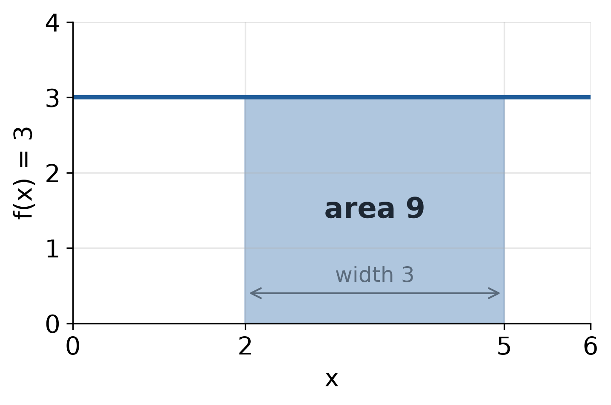
How to read \(\int_a^b f(x)\,dx\) Sec 4.5
\[\int_a^b f(x)\,dx\]
Say: “the integral from a to b of f of x, d x”.
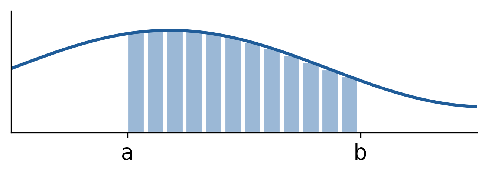
| Part | What it means |
|---|---|
| \(\int\) | a stretched S, for “sum”: the area is a sum of very thin strips |
| \(a\) at the bottom | where the area starts |
| \(b\) on top | where the area stops |
| \(f(x)\) | the height of the strip at \(x\) |
| \(dx\) | \(x\) runs along the horizontal axis; think of \(dx\) as the width of one thin strip |
The rule: integration undoes differentiation Eq 4.3
Find a function \(G\) with \(G'(x)=f(x)\). Then \[\int_a^b f(x)\,dx=G(b)-G(a)=\big[G(x)\big]_a^b\]
Why? Push the right end \(x\) a little, by a width \(w\). The area grows by a thin strip, about \(f(x)\cdot w\). So the area grows at the rate \(f(x)\): its derivative is \(f\).
Another \(G\) with \(G'=f\) differs by a constant; it cancels.
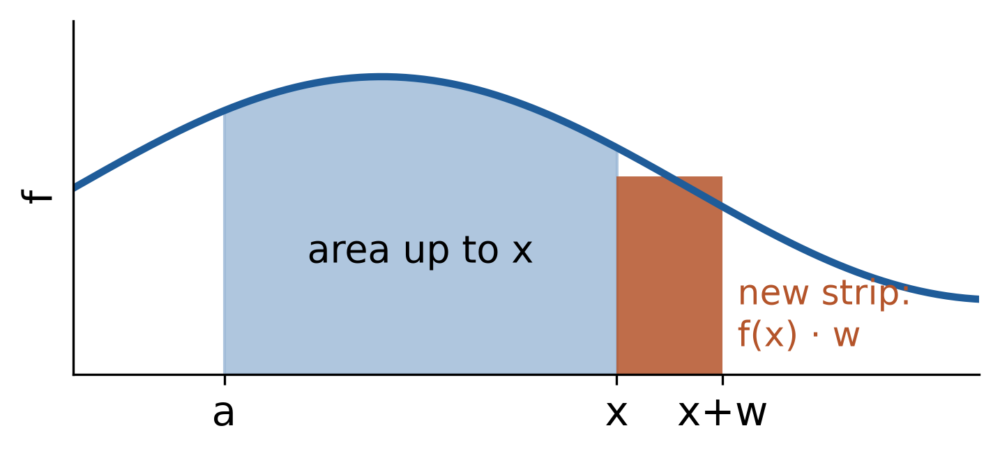
How to read \(\big[G(x)\big]_a^b\) Sec 4.5
\(\big[G(x)\big]_a^b\) reads “G of x, from a to b”. It is short for \(G(b)-G(a)\): put in the top number, put in the bottom number, subtract.
By geometry. Under the flat line at height 3, from 2 to 5: width 3, height 3. \[\int_2^5 3\,dx=3\cdot3=9\]
By the rule. \(G(x)=3x\) has \(G'(x)=3\), so \[ \begin{aligned} \int_2^5 3\,dx&=\big[3x\big]_2^5=3\cdot5-3\cdot2\\ &=15-6=9 \end{aligned} \]
Same answer. The rule also works when the shape is not a rectangle.
Finding \(G\): the derivative table backwards Sec 4.5
| Function \(f(x)\) | A function \(G(x)\) with \(G'(x)=f(x)\) |
|---|---|
| a number \(c\) | \(c\,x\) |
| \(x^n\) | \(\dfrac{x^{n+1}}{n+1}\): so \(x\) gives \(\dfrac{x^2}{2}\), and \(x^2\) gives \(\dfrac{x^3}{3}\) |
| \(c\) times a function | \(c\) times its \(G\) |
| sum or difference | sum or difference of the \(G\)’s |
Always check by taking the derivative of your \(G\). For example, \(\big(\frac{x^2}{2}\big)'=\frac{2x}{2}=x\). Correct.
One worked integral Sec 4.5, Fig 4.4
Find \(\int_0^1 2(1-x)\,dx\).
Multiply out: \(2(1-x)=2-2x\). By the table, \(G(x)=2x-x^2\). Check: \(G'(x)=2-2x\).
\[ \begin{aligned} \int_0^1 (2-2x)\,dx&=\big[2x-x^2\big]_0^1\\ &=(2-1)-(0-0)=1 \end{aligned} \]
Geometry: a triangle, base 1, height 2, area \(\frac12\cdot1\cdot2=\) 1.
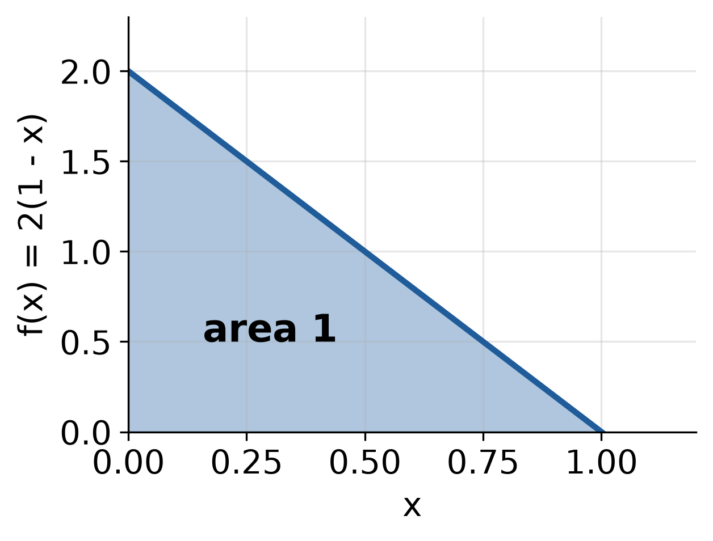
Lena’s shuttle as a density Sec 4.6, Fig 4.5
Given: a shuttle every 12 minutes; \(X\) = Lena’s waiting time in minutes; every moment of arrival equally likely
Spread the probability evenly: a flat line at height \(1/12\) from 0 to 12, and 0 outside. Total area: \(12\cdot\frac1{12}=1\).
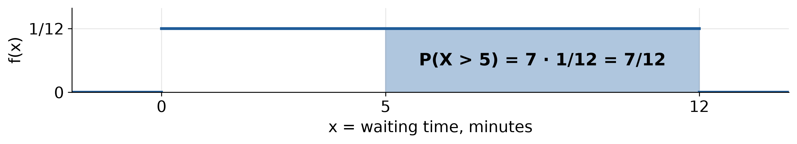
Waiting more than 5 minutes: width 7 times height \(1/12\). Seminar 1, Problem 12, as an area.
Continuous random variable, density Def 4.4
\(X\) is continuous if there is a function \(f(x)\), its density, with
- \(f(x)\ge0\) for every \(x\);
- total area under \(f\) equal to 1;
- \(\Prob(a\le X\le b)=\int_a^b f(x)\,dx\).
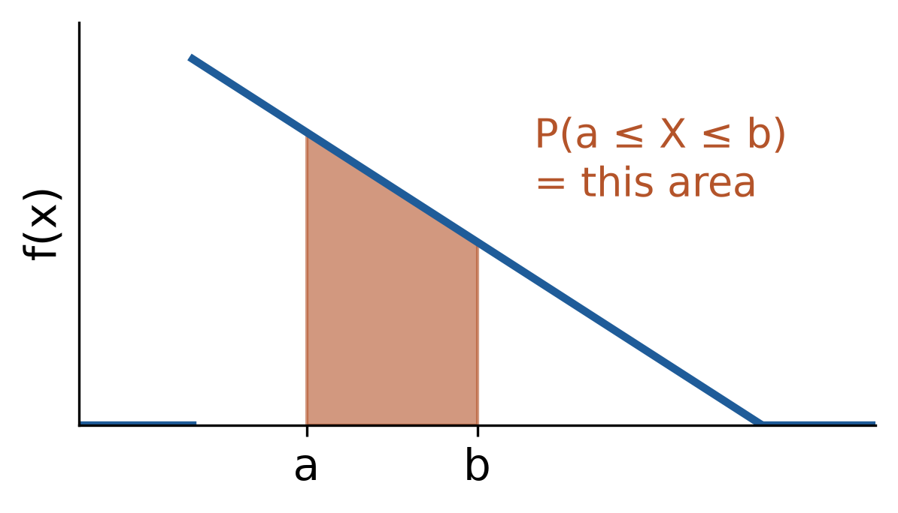
Today every density is 0 outside one interval, from \(c\) to \(d\). So we start integrating at the left end \(c\), and property 2 reads \(\int_c^d f(x)\,dx=1\). Shuttle: \(c=0\), \(d=12\).
How to read \(f(x)\): a height, not a probability Sec 4.6
\(f(x)\) reads “f of x”: the height of the curve at \(x\). Probabilities are areas, height times width, so a density can be larger than 1.
\(f(x)=2(1-x)\) on \([0,1]\) (all numbers from 0 to 1): \(f(0)=2\). Near 0: \[\Prob(0\le X\le0.01)\approx2\cdot0.01=0.02\] A good probability. Exactly: \(\big[2x-x^2\big]_0^{0.01}=0.0199\).
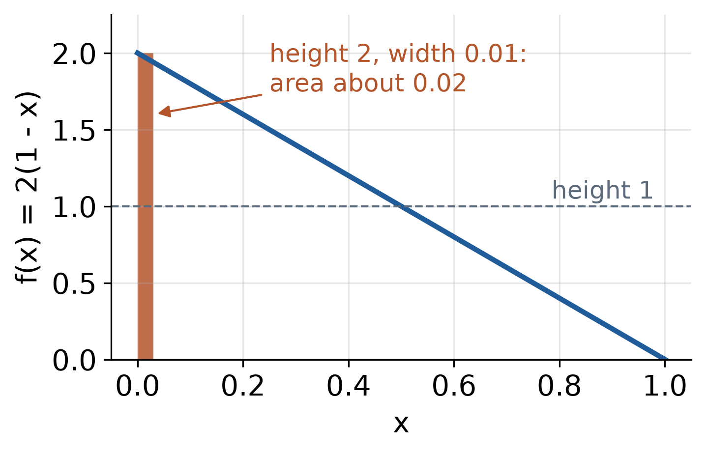
The strip is drawn wider so you can see it.
Pitfall: \(\le\) or \(<\) no longer matters Sec 4.6
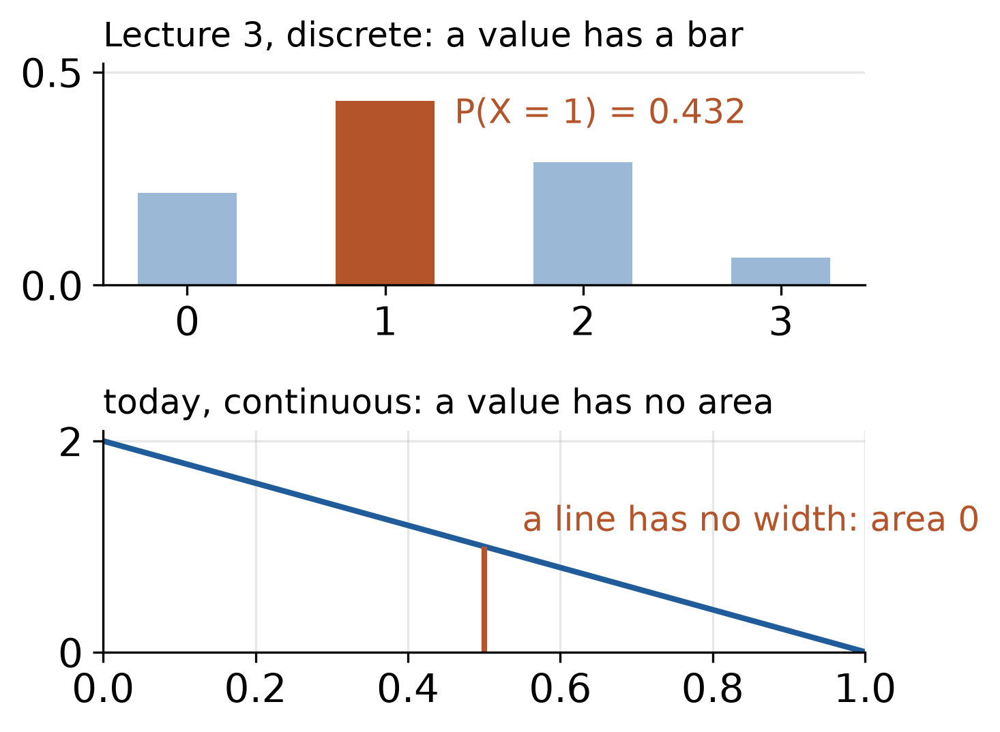
For a continuous \(X\) a single value has no width, so no area: \(\Prob(X=x)=0\) for every \(x\).
So \(\le\) and \(<\) give the same answer: \[ \begin{aligned} \Prob(a\le X\le b)&=\Prob(a<X\le b)\\ =\Prob(a\le X<b)&=\Prob(a<X<b) \end{aligned} \]
Not a contradiction with Lecture 3: there \(X\) was discrete and the boundary mattered. And as in Lecture 1, probability 0 is not impossible. Lena waits some exact time.
Bakhyt’s first customer: is it a density? Ex 4.4
Given: Bakhyt’s coffee kiosk at the Omsk river station opens at 7:00; the first customer always comes within the hour, more often early than late; model: \(f(x)=2(1-x)\) for \(0\le x\le1\), 0 otherwise
\(X\) = hours from opening to the first customer. A count or a measurement? A measurement, any number from 0 to 1: continuous.
Check Def 4.4: \(f(x)\ge0\) on \([0,1]\), and the total area is \[\int_0^1 2(1-x)\,dx=\big[2x-x^2\big]_0^1=1.\] So \(f\) is a density.
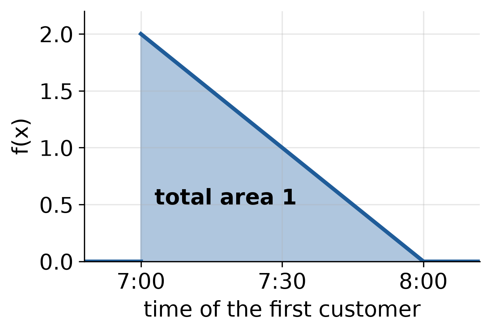
Bakhyt’s first customer: the first half hour Ex 4.4, Fig 4.6
Given: \(X\) = hours from 7:00 to the first customer; \(f(x)=2-2x\) for \(0\le x\le1\), 0 otherwise; \(G(x)=2x-x^2\) has \(G'(x)=2-2x\)
The first half hour is \(0\le X\le0.5\).
\[ \begin{aligned} \Prob(X\le0.5)&=\int_0^{0.5}(2-2x)\,dx\\ &=\big[2x-x^2\big]_0^{0.5}\\ &=(1-0.25)-0=0.75 \end{aligned} \]
Three mornings in four, the first customer comes before 7:30.
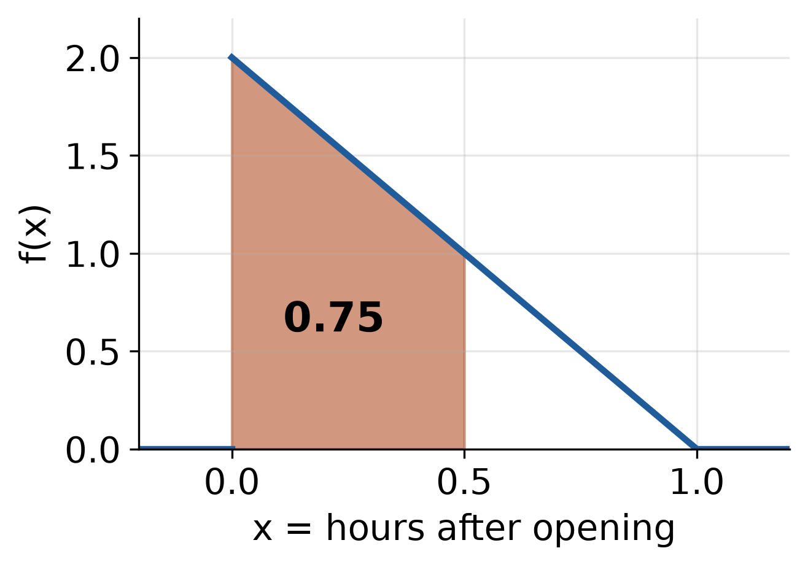
CDF of a continuous random variable Def 4.5
\(X\) continuous, density \(f\) zero outside \(c\) to \(d\). Its CDF, as in Def 3.3: \[F(x)=\Prob(X\le x)=\int_c^x f(t)\,dt\quad\text{for } c\le x\le d,\] 0 for \(x<c\), 1 for \(x>d\). The density is the slope of the CDF: \(f(x)=F'(x)\), except where \(f\) jumps.
How to read \(\int_c^x f(t)\,dt\)
\(x\) is taken: it is where the area stops. So the axis variable is called \(t\). Say “the integral from c to x of f of t, d t”.
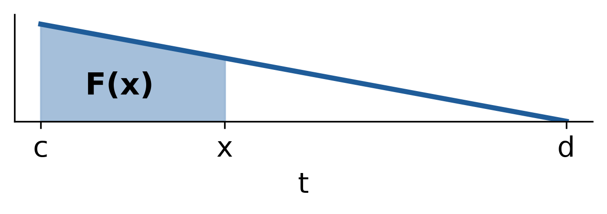
Bakhyt’s CDF Def 4.5, Fig 4.6
Given: \(f(x)=2-2x\) for \(0\le x\le1\), 0 otherwise; \(\Prob(X\le0.5)=0.75\)
For \(0\le x\le1\): \[F(x)=\big[2t-t^2\big]_0^x=2x-x^2,\] 0 to the left, 1 to the right.
\(F(0.5)=1-0.25=0.75\), as before, now read as a height. Check: \(F'(x)=2-2x=f(x)\).
No steps: a continuous CDF climbs smoothly from 0 to 1.
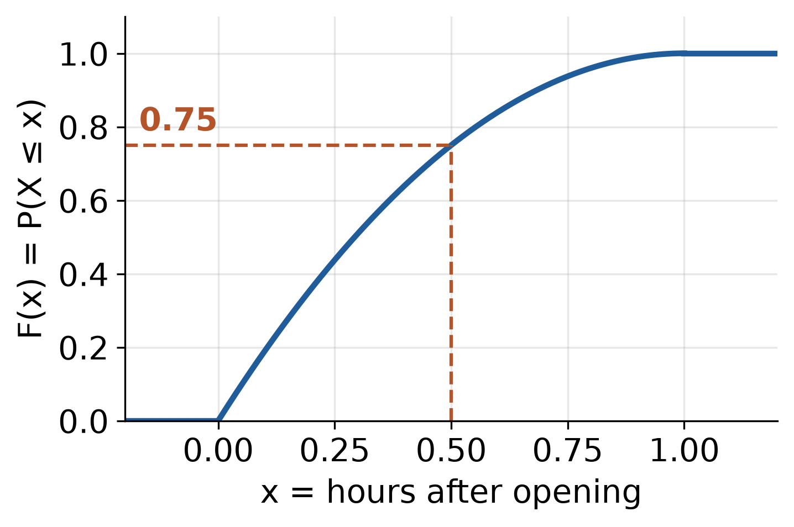
Expected value and variance: sums become integrals Def 4.6
\(X\) continuous, density \(f\) zero outside \(c\) to \(d\); \(p(x_i)\) becomes \(f(x)\,dx\): \[\E[X]=\mu=\int_c^d x\,f(x)\,dx,\qquad \Var(X)=\int_c^d (x-\mu)^2f(x)\,dx.\]
| Discrete (Lecture 3) | Continuous | |
|---|---|---|
| probabilities | \(p(x)=\Prob(X=x)\) | \(\Prob(a\le X\le b)=\int_a^b f(x)\,dx\) |
| expected value | \(\sum_i x_i\,p(x_i)\) | \(\int_c^d x\,f(x)\,dx\) |
| \(\E[g(X)]\), e.g. \(\E[X^2]\) | \(\sum_i g(x_i)\,p(x_i)\) | \(\int_c^d g(x)\,f(x)\,dx\) |
| variance (\(\operatorname{SD}=\sqrt{\Var}\)) | \(\sum_i (x_i-\mu)^2p(x_i)\) | \(\int_c^d (x-\mu)^2f(x)\,dx\) |
Bakhyt: the first customer on average Def 4.6
Given: \(X\) = hours from 7:00 to the first customer; \(f(x)=2-2x\) for \(0\le x\le1\), 0 otherwise
Guess first: after 30 minutes, more, or less?
Multiply out: \(x\,f(x)=2x-2x^2\). Then \[ \begin{aligned} \E[X]&=\int_0^1(2x-2x^2)\,dx=\Big[x^2-\frac{2x^3}{3}\Big]_0^1\\ &=1-\frac23=\frac13\ \text{hour} \end{aligned} \]
On average after 20 minutes, before 7:30.
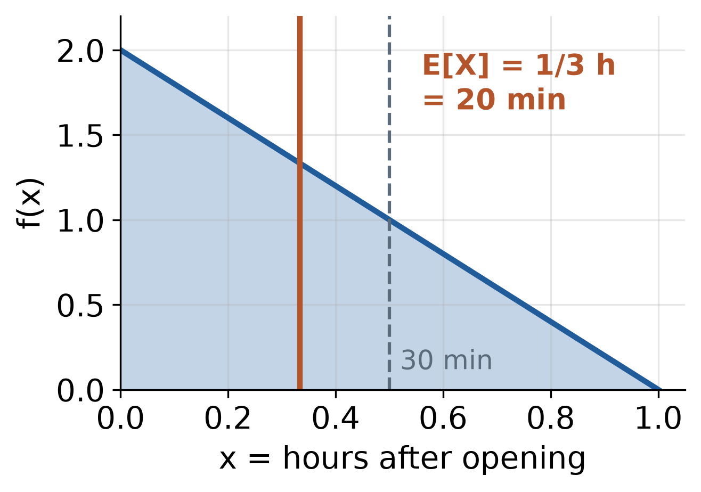
Bakhyt: variance and standard deviation Def 4.6, Thm 3.2
Given: \(f(x)=2-2x\) for \(0\le x\le1\) (hours), 0 otherwise; \(\E[X]=\frac13\)
Multiply out: \(x^2f(x)=2x^2-2x^3\), so \[\E[X^2]=\int_0^1(2x^2-2x^3)\,dx=\Big[\frac{2x^3}{3}-\frac{x^4}{2}\Big]_0^1=\frac23-\frac12=\frac16\]
By the shortcut (Thm 3.2, it still holds for densities): \[\Var(X)=\E[X^2]-\mu^2=\frac16-\Big(\frac13\Big)^2=\frac16-\frac19=\frac1{18}\approx0.0556\ \text{hours}^2\]
\(\operatorname{SD}(X)=\sqrt{1/18}\approx0.236\) hours, about 14 minutes. Hours squared mean nothing to Bakhyt. 20 minutes, give or take 14, does.
Your turn: repair visits in Vladimir Exercise 4
Polina, who schedules repair technicians, models the length \(X\) of a visit, in hours, by the density \(f(x)=Cx\) for \(0\le x\le2\), and \(f(x)=0\) otherwise. Find the number \(C\), then \(\Prob(X\le1)\) and \(\E[X]\).
Total area 1: \(\int_0^2 Cx\,dx=C\big[\frac{x^2}{2}\big]_0^2=2C=1\), so \(C=\) 0.5
\(\Prob(X\le1)=\int_0^1 0.5x\,dx=\big[\frac{x^2}{4}\big]_0^1=\) 0.25
\(\E[X]=\int_0^2 x\cdot0.5x\,dx=\big[\frac{x^3}{6}\big]_0^2=\frac86\approx\) 1.33 hours
Uniform distribution Def 4.7
\(X\sim\operatorname{U}(a,b)\), the uniform distribution on the interval from \(a\) to \(b\) (\(a<b\)), has density and CDF \[f(x)=\frac{1}{b-a},\qquad F(x)=\frac{x-a}{b-a}\] for \(a\le x\le b\). Outside: \(f=0\); \(F=0\) left of \(a\), \(F=1\) right of \(b\).
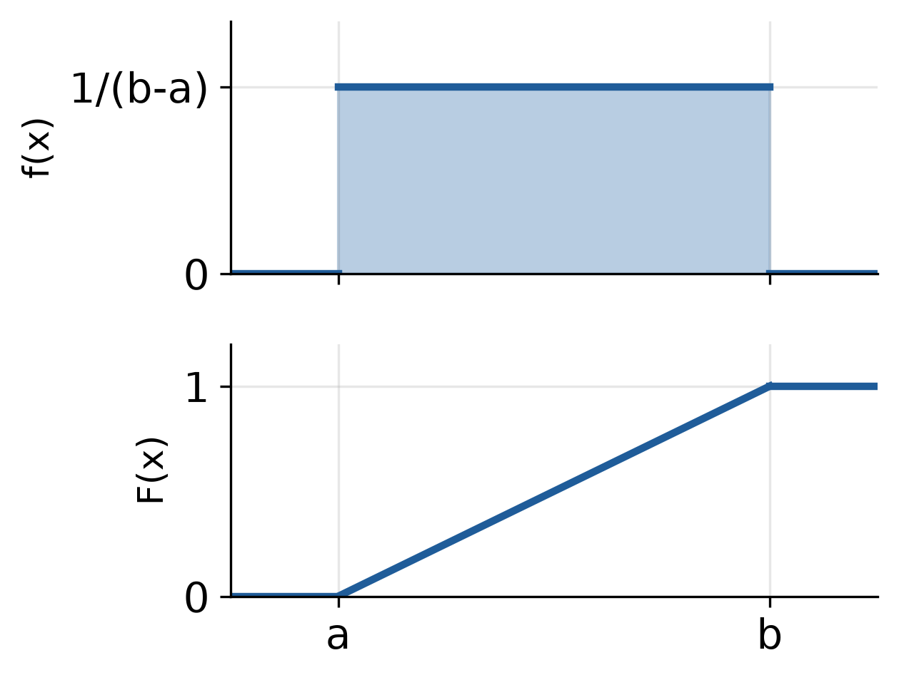
How to read \(X\sim\operatorname{U}(a,b)\) Sec 4.7
| Write | Say | For Lena’s shuttle |
|---|---|---|
| \(X\sim\operatorname{U}(a,b)\) | “X is uniform on the interval from a to b” | \(X\sim\operatorname{U}(0,12)\), minutes |
| \(\dfrac{1}{b-a}\) | “one over b minus a”: the height | \(\dfrac{1}{12-0}=\dfrac1{12}\) |
| \(\dfrac{x-a}{b-a}\) | the share of the interval left of \(x\) | \(F(x)=\dfrac{x-0}{12-0}=\dfrac{x}{12}\) |
Why that height? Width times height must be 1: \((b-a)\cdot\frac{1}{b-a}=1\).
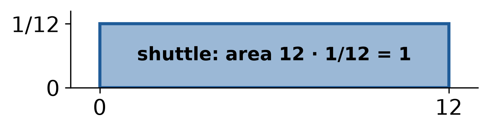
The uniform CDF is a share of the interval Def 4.7
Where does \(F\) come from? Def 4.5, starting at the left end \(a\): \[F(x)=\int_a^x\frac{1}{b-a}\,dt=\Big[\frac{t}{b-a}\Big]_a^x=\frac{x-a}{b-a}\]
The rectangle from \(a\) to \(x\): width \(x-a\) times height \(\frac1{b-a}\). It is the share of the interval left of \(x\): Lecture 1’s geometric probability on a segment (Def 1.9), written as a random variable.
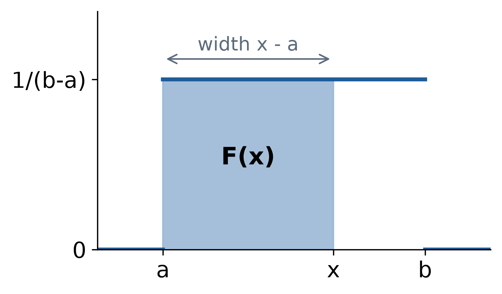
Waiting for the shuttle Ex 4.5
Given: the shuttle leaves every 12 minutes; Lena comes at a random moment, every moment equally likely
\(X\) = Lena’s wait in minutes, any number from 0 to 12, all equally likely. So \(X\sim\operatorname{U}(0,12)\): \(f(x)=\frac1{12}\), \(F(x)=\frac{x}{12}\).
More than 8 minutes, by the complement rule: \[\Prob(X>8)=1-F(8)=1-\frac{8}{12}=\frac13\]
The rectangle from 8 to 12: width 4 times height \(\frac1{12}\), 1/3.
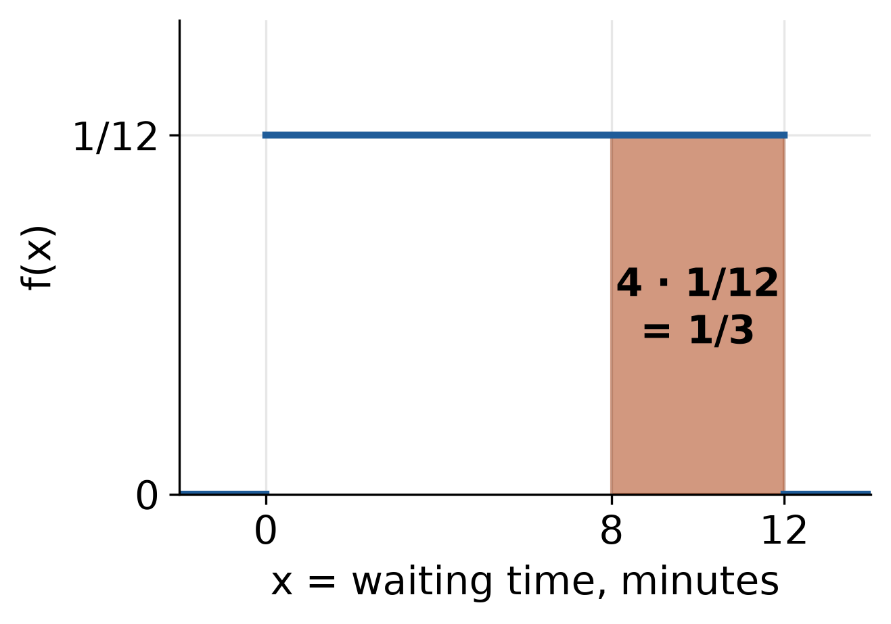
Mean and variance of the uniform Thm 4.4
If \(X\sim\operatorname{U}(a,b)\), then \(\quad\E[X]=\dfrac{a+b}{2},\qquad \Var(X)=\dfrac{(b-a)^2}{12}.\)
Idea: \(\frac1{b-a}\) comes out of the integral: \[\E[X]=\frac{1}{b-a}\Big[\frac{x^2}{2}\Big]_a^b=\frac{b^2-a^2}{2(b-a)}=\frac{a+b}{2}\]
Shuttle, \(\operatorname{U}(0,12)\): \(\E[X]=\) 6 min; \(\Var(X)=\frac{12^2}{12}=12\) min²; \(\operatorname{SD}\approx3.46\) min.
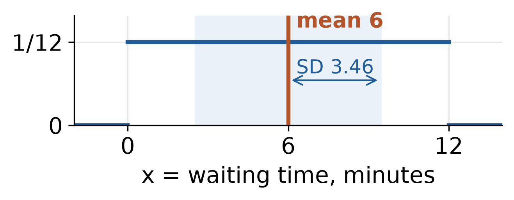
Uses \(b^2-a^2=(b-a)(b+a)\). Variance: same with \(x^2\), then the shortcut. Proof: Sec 4.7.
Your turn: delivery in 30 to 50 minutes Exercise 5
Arman’s food-delivery app promises delivery “in 30 to 50 minutes”. Assume the delivery time \(X\) in minutes is \(\operatorname{U}(30,50)\). Find \(\Prob(X>45)\), \(\E[X]\) and \(\operatorname{SD}(X)\).
The rectangle from 45 to 50: \(\Prob(X>45)=\dfrac{50-45}{50-30}=\dfrac{5}{20}=\) 0.25
\(\E[X]=\dfrac{30+50}{2}=\) 40 minutes
\(\operatorname{SD}(X)=\sqrt{\dfrac{(50-30)^2}{12}}=\dfrac{20}{\sqrt{12}}\approx\) 5.77 minutes

Probability Theory and Mathematical Statistics · HSE 2026/27